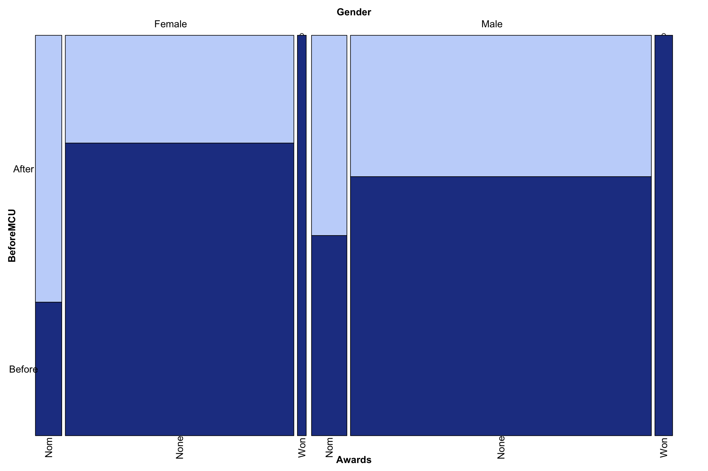

Chapter 11 movie/tv first
first_credit <- film_clean %>%
filter(!title %in% c("The Simpsons", "The Tonight Show with Jay Leno",
"Late Night with Conan O'Brien", "Sesame Street")) %>%
group_by(actor_name) %>%
slice(which.min(release_date))
g_first <- first_credit %>%
ggplot(aes(x = release_date, y = reorder(actor_name, release_date), color = type)) +
geom_segment(aes(x = min(release_date), xend = as.Date(release_date), y = reorder(actor_name, release_date),
yend = reorder(actor_name, release_date)), color = "grey") +
geom_point(size = 3) +
scale_x_date(date_breaks = "5 years", date_labels = "%Y") +
scale_color_manual(values = c(colors[6], colors[11]))+
labs(title = "Most MCU actors got their start in TV",
subtitle = "First Credited Role",
y="",
x = "Release Date")+
theme_minimal()
g_first
For most actors in the MCU, their first credited role is on a TV show. Which makes sense for actors starting young or having a small role on a show. Movies are somewhat clustered for release dates, there is a cluster of first appearances in movies around the late 80’s - 90’s and the three most recent debuts were in movies.